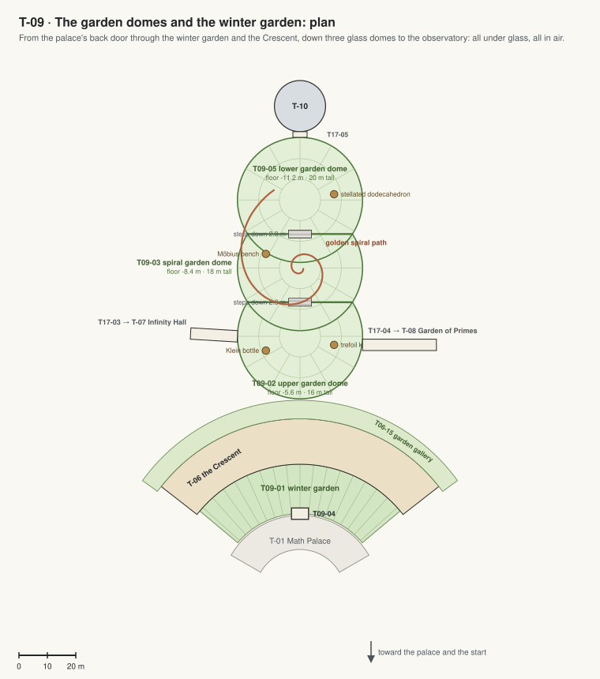

T-09 · The garden ring and the garden domes
The garden all under glass: the garden ring all the way round the dome (with the sunken grove on the left and the armillary sundial at the front right), the garden gallery along the Ring, three glass domes stepping down the hill to the observatory.
Jim, 5 Oct 2026: "since bad conditions, all the schools buildings should be connected and sealed, so there should not be open area to the air. all open space should be covered by dome or sealed". Every room, court and garden is under a roof, a glass vault or a dome; every building is joined to the next by a sealed link; people meet the outside only at airlocks.

| Code | Room | What it is for | Size |
|---|---|---|---|
| T09-01 | Garden ring | The garden all the way round the dome at the palace's level, under a glass vault on bronze ribs from the dome's foot to the Ring's eave: olive trees, red maples, palms, ferns and flowering beds along a path round the dome, benches; the armillary sundial at the front right. Also: Walks between classes, open-air lessons. | 3440 m² |
| T09-06 | Sunken grove | On the left, the garden steps down 5.6 m into a grove at the lower floor's level under flat glass at ground level: tall trees with room to grow, a pond, stairs down at both ends; the café, the dining hall, the assembly hall and the art studio open onto it. Also: Lunch outside, concerts. | 630 m² |
| T09-02 | Upper garden dome | Under the first glass dome, level with the Ring's lower floor: lawns and flower beds on the golden spiral, the Klein bottle and the trefoil knot, a café kiosk. Also: Lessons outdoors, as it feels. | 1520 m² |
| T09-03 | Spiral garden dome | Under the middle dome, a step lower: the golden spiral path through ferns, grasses and flowering shrubs, the Möbius bench, a pool. | 1520 m² |
| T09-05 | Lower garden dome | Under the lowest and tallest dome: fruit trees and tall palms, the stellated dodecahedron, the plaza at the observatory's door. Also: Concerts and the graduation party. | 1520 m² |
| T09-04 | Palace back door | A glass vestibule at the back of the dome, from the balcony into the garden ring. | 24 m² |
| T16-01 | Armillary sundial | A bronze armillary sphere 2.2 m across on a stone plinth, its rod parallel to Mars's axis; the hour ring shows the sol's 24 Mars hours (each 1 h 2 min long). Also: Lessons on angles, time and orbits. | |
| T16-02 | Sun classroom | Five long stone benches with cushions in a half-circle facing the sundial, on basalt paving, in the garden ring under its glass vault. Also: A quiet seat in the morning sun. |